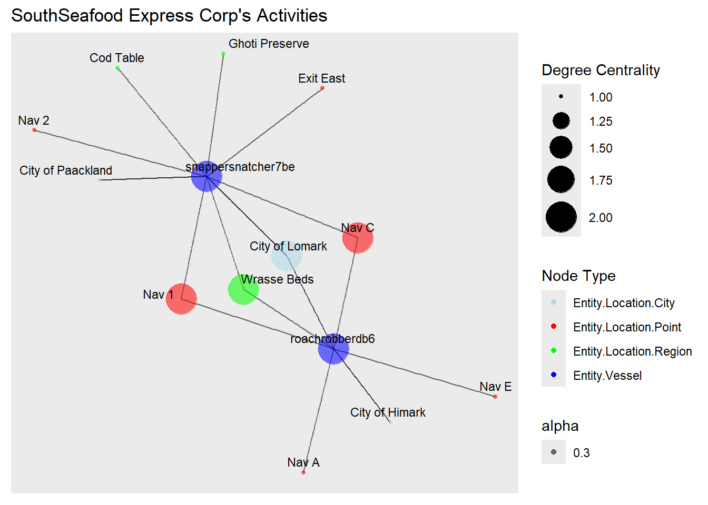
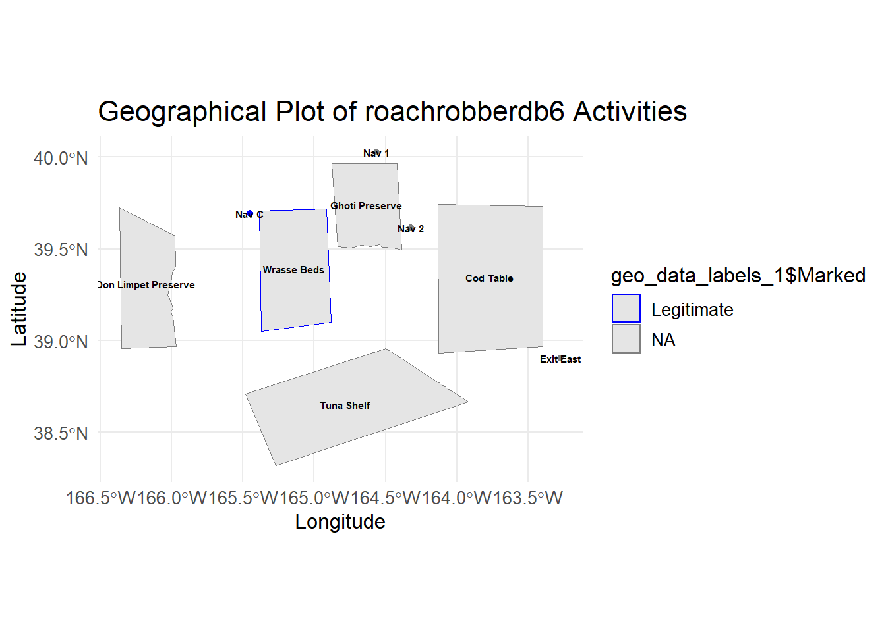
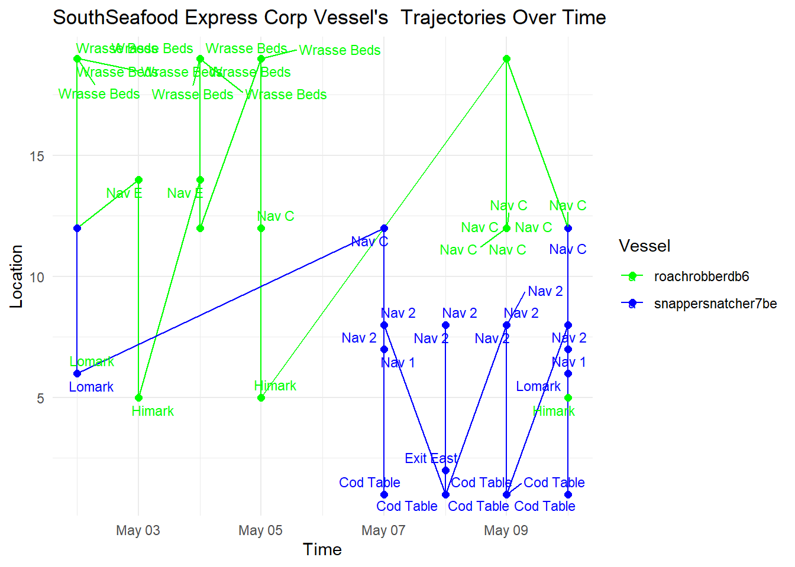
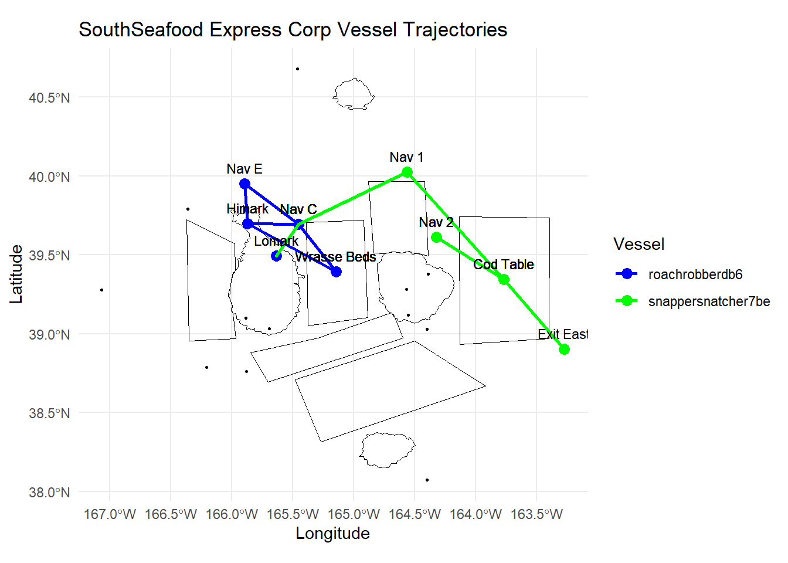
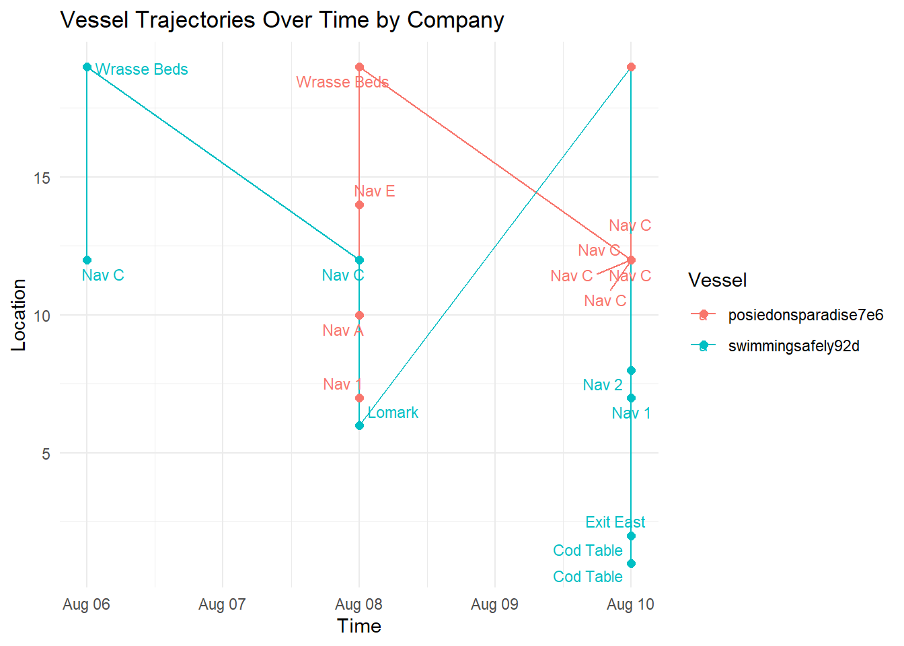

Show the code
pacman::p_load(tidyverse, sf, lwgeom, tmap, units, maps, igraph, tidygraph, ggraph, visNetwork, lubridate, jsonlite, httr,tmap,viridis,plotly, ggrepel)See link below for additional details on this challenge!
In Oceanus, the routine life of islanders is defined by the movements of commercial fishing vessels, which usually indicate a healthy economy. However, this routine was disrupted when SouthSeafood Express Corp was caught fishing illegally, causing a significant scandal in the fishing community. FishEye International, a non-profit dedicated to combating illegal fishing, is collecting and analyzing data on ship movements and shipping records to understand this disruption better. They have compiled this data into CatchNet: the Oceanus Knowledge Graph. FishEye’s analysts need assistance in creating analytical capabilities to make sense of this data and better understand local commercial fishing behavior.
This study aims to use visual analytics to understand patterns of groups in the knowledge graph. This will endeavour to:
Task 2- Develop visualizations that illustrate the inappropriate behavior of SouthSeafood Express Corp vessels. How do their movement and catch contents compare to other fishing vessels? When and where did SouthSeafood Express Corp vessels perform their illegal fishing? How many different types of suspicious behaviors are observed? Use visual evidence to justify your conclusions.
Task 3- To support further Fisheye investigations, develop visual analytics workflows that allow you to discover other vessels engaging in behaviors similar to SouthSeafood Express Corp’s illegal activities? Provide visual evidence of the similarities.
Task 4- How did fishing activity change after SouthSeafood Express Corp was caught? What new behaviors in the Oceanus commercial fishing community are most suspicious and why?
In the code chunk, p_load() and pacman package is used to load the required packages below:
tidyverse
ggplot2, dplyr, tidyr, readr, purrr, tibble, stringr, and forcats. These packages share an underlying design philosophy, grammar, and data structures.sf
tidyverse framework.lwgeom
sf objects, leveraging the liblwgeom library. This is used for advanced spatial operations like validating geometries.tmap
units
maps
igraph
tidygraph
dplyr verbs.ggraph
ggplot2 for graph visualization. It is used for creating network graphs using the ggplot2 grammar.visNetwork
vis.js library. It allows for the creation of interactive network graphs.lubridate
jsonlite
httr
viridis
plotly
ggrepel
pacman::p_load(tidyverse, sf, lwgeom, tmap, units, maps, igraph, tidygraph, ggraph, visNetwork, lubridate, jsonlite, httr,tmap,viridis,plotly, ggrepel)In this section, we will prepare our links dataset
In this section, we use thejsonlite package to read our data in a JSON (JavaScript Object Notation) file named mc2_edited.json and convert it into an R object for further analysis and manipulation.
mc2_data <- fromJSON("data/mc2_edited.json")We first convert the links data from the JSON object into a tibble using dplyr and perform following transformations:
Removing Duplicates: The distinct() function is used to ensure that only unique rows are retained in the dataset, removing any duplicate records.
Data Type Conversion:
source, target, type, dwell, and raw_source are converted to character strings using as.character().
time is converted to a POSIXct date-time object with the format %Y-%m-%dT%H:%M:%OS and time zone UTC to ensure proper handling of time data.
date is converted to a Date object with the format %Y-%m-%d.
ping_date is derived from the time column, also converted to a Date object after transforming it to POSIXct format.
Column Selection: The select() function is used to keep only the relevant columns for further analysis, specifically type, time, dwell, source, target, date, ping_date, and raw_source.
Aggregation and Filtering:
Grouping: The data is grouped by source, target, and type to prepare for aggregation.
Summarizing: The summarise() function calculates the number of interactions (weights) between each pair of source and target for each type.
Filtering: The filter() function removes any rows where the source is the same as the target, eliminating self-loops in the network.
Ungrouping: Finally, the ungroup() function ensures that the resulting dataset is no longer grouped, making it easier to work with in subsequent steps.
mc2_links_prep <- as_tibble(mc2_data$links) %>%
distinct() %>%
mutate(source = as.character(source),
target = as.character(target),
type = as.character(type),
dwell = as.character(dwell),
raw_source = as.character(raw_source),
time = as.POSIXct(time, format="%Y-%m-%dT%H:%M:%OS", tz="UTC"),
date = as.Date(as.character(date), format = "%Y-%m-%d"),
ping_date = as.Date(as.POSIXct(time, format="%Y-%m-%dT%H:%M:%OS", tz="UTC"))) %>%
select(type, time, dwell, source, target, date, ping_date)
mc2_links <- mc2_links_prep%>%
group_by(source, target, type) %>%
summarise(weights = n(), .groups = 'drop') %>%
filter(source != target) %>%
ungroup()In this section, we will prepare our nodes dataset
Similarly, we extract the nodes data from the JSON object into a tibble and perform the following transformations to the data:
Type Original: A new column type_original is created to store the original values of the type column.
Data Type Conversion: Several columns are converted to appropriate data types:
id and type are converted to character strings.
tonnage and length_overall are converted to numeric values after ensuring they are in character format.
Activities, fish_species_present, kind, flag_country, company, raw_source, and name are converted to character strings.
last_edited_by, last_edited_date, and date_added are converted to POSIXct date-time objects using the strptime function to parse the dates correctly.
Type Classification: The type column is recategorized to a more general “Entity.Vessel” if the original type falls into specific vessel categories such as “Entity.Vessel.CargoVessel,” “Entity.Vessel.Ferry.Cargo,” “Entity.Vessel.FishingVessel,” or “Entity.Vessel.Other.” If the type does not match these categories, it remains unchanged.
Column Selection: The final step is selecting relevant columns for further analysis. The selected columns include id, type, type_original, namee, company, flag_country, Activities, tonnage, length_overall, raw_source, fish_species_present, and kind.
# Convert nodes to tibble, modify variable types, and select required columns
mc2_nodes <- as_tibble(mc2_data$nodes) %>%
mutate(
type_original = type,
id = as.character(id),
type = as.character(type),
type = case_when(
type %in% c("Entity.Vessel.CargoVessel", "Entity.Vessel.Ferry.Cargo", "Entity.Vessel.FishingVessel", "Entity.Vessel", "Entity.Vessel.Other") ~ "Entity.Vessel",
TRUE ~ type
),
tonnage = as.numeric(as.character(tonnage)),
length_overall = as.numeric(as.character(length_overall)),
Activities = as.character(Activities),
fish_species_present = as.character(fish_species_present),
kind = as.character(kind),
flag_country = as.character(flag_country),
company = as.character(company),
raw_source = as.character(raw_source),
namee = as.character(name),
last_edited_by = as.POSIXct(strptime(as.character(last_edited_by), format = "%Y-%m-%dT%H:%M:%OS")),
last_edited_date = as.POSIXct(strptime(as.character(last_edited_date), format = "%Y-%m-%dT%H:%M:%OS")),
date_added = as.POSIXct(strptime(as.character(date_added), format = "%Y-%m-%dT%H:%M:%OS"))
) %>%
select(id, type,type_original, namee, company, flag_country, Activities, tonnage, length_overall, fish_species_present, kind)We save our processed data into .rds data format files using the write_rds() of readr package. The output file is saved in rds sub-folder. We do this to reduce the loading time and more importantly, we can avoid uploading the large raw files onto GitHub.
write_rds(mc2_links_prep, "data/rds/mc2_links_prep.rds")
mc2_links_prep <- read_rds("data/rds/mc2_links_prep.rds")
write_rds(mc2_links, "data/rds/mc2_links.rds")
mc2_links <- read_rds("data/rds/mc2_links.rds")
write_rds(mc2_nodes, "data/rds/mc2_nodes.rds")
mc2_nodes <- read_rds("data/rds/mc2_nodes.rds")We discovered that the columns “type,” “source,” and “target” are complete, containing no missing values. Conversely, the columns “time,” “dwell,” “date,” and “ping_date” exhibit numerous missing values. This outcome is anticipated since these columns exclusively hold data for specific categories.
# Check for columns with missing values
colSums(is.na(mc2_links_prep)) type time dwell source target date ping_date
0 13101 13101 0 0 258542 13101 summary(mc2_links_prep) type time dwell
Length:271643 Min. :2035-02-01 00:00:00.00 Length:271643
Class :character 1st Qu.:2035-04-17 13:33:02.35 Class :character
Mode :character Median :2035-06-28 19:34:55.25 Mode :character
Mean :2035-06-30 22:13:03.65
3rd Qu.:2035-09-13 13:44:34.00
Max. :2035-11-30 00:00:00.00
NA's :13101
source target date
Length:271643 Length:271643 Min. :2035-02-01
Class :character Class :character 1st Qu.:2035-07-25
Mode :character Mode :character Median :2035-09-19
Mean :2035-08-29
3rd Qu.:2035-10-26
Max. :2035-11-30
NA's :258542
ping_date
Min. :2035-02-01
1st Qu.:2035-04-17
Median :2035-06-28
Mean :2035-06-30
3rd Qu.:2035-09-13
Max. :2035-11-30
NA's :13101 Next, we ensure there are no duplicated rows
mc2_links[duplicated(mc2_links),]# A tibble: 0 × 4
# ℹ 4 variables: source <chr>, target <chr>, type <chr>, weights <int>Let’s try to understand how our links data is categorized into. It seems there are three categories of data as shown below.
unique_type <- unique(mc2_links$type)
print(unique_type)Define a function to count and print unique categories for a given column.
count_unique_categories <- function(data, column_name) {
cat("**", column_name, "**\n", sep = "")
category_counts <- table(data[[column_name]])
sorted_counts <- sort(category_counts, decreasing = TRUE)
print(sorted_counts)
}Let’s take a look into our nodes dataframe.
glimpse(mc2_nodes)Rows: 5,637
Columns: 11
$ id <chr> "gadusnspecificatae4ba", "piscesfrigus900", "pisc…
$ type <chr> "Entity.Commodity.Fish", "Entity.Commodity.Fish",…
$ type_original <chr> "Entity.Commodity.Fish", "Entity.Commodity.Fish",…
$ namee <chr> "Cod/Gadus n.specificatae", "Birdseye/Pisces frig…
$ company <chr> NA, NA, NA, NA, NA, NA, NA, NA, NA, NA, NA, NA, N…
$ flag_country <chr> NA, NA, NA, NA, NA, NA, NA, NA, NA, NA, NA, NA, N…
$ Activities <chr> "NULL", "NULL", "NULL", "NULL", "NULL", "NULL", "…
$ tonnage <dbl> NA, NA, NA, NA, NA, NA, NA, NA, NA, NA, NA, NA, N…
$ length_overall <dbl> NA, NA, NA, NA, NA, NA, NA, NA, NA, NA, NA, NA, N…
$ fish_species_present <chr> "NULL", "NULL", "NULL", "NULL", "NULL", "NULL", "…
$ kind <chr> NA, NA, NA, NA, NA, NA, NA, NA, NA, NA, "city", "…Again, it’s hard to make sense if these missing values are actually important due ot the nature of the data. We shall handle it as it goes. However, the main columns we are interested in id and type are not missing any data.
# Check for columns with missing values
colSums(is.na(mc2_nodes)) id type type_original
0 0 0
namee company flag_country
5627 5458 5341
Activities tonnage length_overall
0 5359 5354
fish_species_present kind
0 5613 There does not seem to be any whole duplicate rows.
mc2_nodes[duplicated(mc2_nodes),]# A tibble: 0 × 11
# ℹ 11 variables: id <chr>, type <chr>, type_original <chr>, namee <chr>,
# company <chr>, flag_country <chr>, Activities <chr>, tonnage <dbl>,
# length_overall <dbl>, fish_species_present <chr>, kind <chr>It seems we have many types of nodes even after grouping more of the Vessel types into our generic “Entity.Vessel”. It seems “Entity.Commodity.Fish”,‘Entity.Vessel’, ‘Entity.Location.Point’, ‘Entity.Location.City’, ‘Entity.Location.Region’ will be important for us.
unique_type <- unique(mc2_nodes$type)
print(unique_type)count_unique_categories(mc2_nodes, 'type')
count_unique_categories(mc2_nodes, 'flag_country')
count_unique_categories(mc2_nodes, 'kind') There are 100 companies found in our dataset
count_unique_companies <- length(unique(mc2_nodes$company))
count_unique_companies[1] 100The code below snippet employs the sf package to read and manipulate GeoJSON data. It uses st_read() to import the GeoJSON file and renames the column “Name” to “id” using rename() from the dplyr package.
# Read the GeoJSON file
geojson_file <- "data/Oceanus Information/Oceanus Geography.geojson"
geo_data <- st_read(geojson_file) %>%
rename(id = Name)Reading layer `Oceanus Geography' from data source
`C:\weipengten\ISSS608\ISSS608-VAA\Take-Home_Ex\Take-Home_Ex03\data\Oceanus Information\Oceanus Geography.geojson'
using driver `GeoJSON'
Simple feature collection with 29 features and 7 fields
Geometry type: GEOMETRY
Dimension: XY
Bounding box: xmin: -167.0654 ymin: 38.07452 xmax: -163.2723 ymax: 40.67775
Geodetic CRS: WGS 84Using tmap we create a basic plot of our locations we are interested in.
# Visualize the geographical data with tmap
tmap_mode("plot")
tm_shape(geo_data) +
tm_polygons(alpha = 0.5) +
tm_borders(lwd = 1, alpha = 0.5) +
tm_layout(frame = FALSE) +
tmap_style("gray") +
tm_shape(geo_data) +
tm_dots(col = "purple", size = 0.2) +
tm_text(text = "id", size = 0.6, col = "black") + # Add labels to the locations
tm_layout(legend.position = c("left", "bottom"))
This code segment focuses on filtering and preparing data for exploratory data analysis (EDA), particularly concerning commodity fish species in specific regions. It utilizes several packages within the tidyverse ecosystem.
Firstly, the dplyr package is employed for data manipulation tasks. Two main operations are performed:
Filtering Commodity Fish Data: The filter() function is used to extract rows from the mc2_nodes dataframe where the type is “Entity.Commodity.Fish”. This isolates data relevant to commodity fish species.
Extracting Fish Species Data: Another subset of data is extracted for locations (“Entity.Location.Region” type) and processed to extract individual fish species. This involves several steps:
The filter() function extracts rows where the type is “Entity.Location.Region”.
The mutate() function modifies the data, removing unnecessary characters from the “fish_species_present” column and splitting the string into individual fish species using regular expressions (str_remove_all() and str_split()).
The unnest() function expands the list of fish species.
Further data cleaning is done with mutate() and rename() functions to ensure consistency and readability.
Following data preparation, a function named get_commodity_fish_ids() is defined. This function retrieves commodity fish IDs for specific regions. It takes optional arguments for regions and utilizes the preprocessed fishspecies_expanded dataframe to filter and extract relevant fish species IDs based on specified regions.
commodityfish <- mc2_nodes %>%
filter(type == "Entity.Commodity.Fish")
# Extract and transform Fish Species data
fishspecies_expanded <- mc2_nodes %>%
filter(type == "Entity.Location.Region") %>%
mutate(Fish_Species = str_remove_all(fish_species_present, 'c\\(|\\)|"')) %>%
mutate(Fish_Species = str_split(Fish_Species, ",\\s*")) %>%
unnest(Fish_Species) %>%
mutate(Fish_Species = str_trim(Fish_Species)) %>%
rename(Region = id)
# Join with Commodity Fish data
fishspecies_expanded <- fishspecies_expanded %>%
left_join(commodityfish, by = c("Fish_Species" = "namee")) %>%
select(Region, Fish_Species, id)
# Function to get commodity fish IDs for specific regions
get_commodity_fish_ids <- function(..., regions = NULL) {
fishspecies_expanded %>%
filter(Region %in% c(..., regions)) %>%
pull(id)
}This code filters data from mc2_links_prep to isolate harbor report events involving particular vessels (“snappersnatcher7be” and “roachrobberdb6”). It renames columns for clarity and selects only relevant columns, focusing on the city, vessel, event type, and reporting date. Overall, it streamlines the extraction and organization of data crucial for analyzing harbor activities related to specific vessels.
harboureport_culprit<- mc2_links_prep %>%
filter(type == "Event.HarborReport") %>%
filter(source %in% c("snappersnatcher7be","roachrobberdb6")) %>%
rename(vessel = source) %>%
rename(city = target) %>%
rename(harboreporting_date = date) %>%
select(city, vessel, type, harboreporting_date)Retrieve and process transaction data to identify suspicious transactions.
Let’s retrieve the Transaction data by applying the filter type == "Event.Transaction" for our links data
We then perform a self-join on the transaction dataset on source column to get the respective city and fish column for each cargo delivery, filtering for only the two cities we observed earlier ‘City of Paackland’, ‘City of Lomark’ which snappersnatcher7b frequented.
# Retrieve and process transaction data
transactions <- mc2_links_prep %>%
filter(type == "Event.Transaction") %>%
filter(!is.na(source) & !is.na(target)) %>%
group_by(source) %>%
mutate(row_number = row_number()) %>%
pivot_wider(names_from = row_number, values_from = target) %>%
rename(city = `2`, fish = `1`) %>%
rename(transaction_date = date) %>%
select(source, fish, city, type, transaction_date) %>%
inner_join(commodityfish, by = c("fish" = "id"))No duplicated transaction records were found after the self-join
duplicated_transactions <- transactions[duplicated(transactions$source), ]
duplicated_transactions# A tibble: 0 × 15
# Groups: source [0]
# ℹ 15 variables: source <chr>, fish <chr>, city <chr>, type.x <chr>,
# transaction_date <date>, type.y <chr>, type_original <chr>, namee <chr>,
# company <chr>, flag_country <chr>, Activities <chr>, tonnage <dbl>,
# length_overall <dbl>, fish_species_present <chr>, kind <chr>This code segment filters and prepares data from mc2_nodes and mc2_links dataframes, focusing on specific types of entities such as vessels, points, cities, and regions, while excluding vessels not associated with “SouthSeafood Express Corp”. It further filters mc2_links data to retain only transport events, transactions, and harbor reports. Then, it extracts relevant node IDs and filters edges to ensure consistency, removing any missing nodes from the filtered links. Overall, this process ensures that the data is tailored for subsequent analysis, particularly in the context of transportation and harbor activities involving specific entities.
# Filter and prepare nodes
mc2_nodes_suspect <- mc2_nodes %>%
filter(type %in% c('Entity.Vessel', 'Entity.Location.Point', 'Entity.Location.City', 'Entity.Location.Region')) %>%
filter(!(type == 'Entity.Vessel' & company != "SouthSeafood Express Corp"))
# Filter and prepare nodes
mc2_links_filtered <- mc2_links %>%
filter(type %in% c('Event.TransportEvent.TransponderPing','Event.Transaction',"Event.HarborReport"))
# Extract relevant node IDs
filtered_node_ids <- mc2_nodes_suspect$id
# Filter and prepare edges
mc2_links_suspect <- mc2_links_filtered %>%
filter(source %in% filtered_node_ids & target %in% filtered_node_ids)
# Ensure no missing nodes in the filtered links
missing_nodes <- setdiff(unique(c(mc2_links_suspect$source, mc2_links_suspect$target)), mc2_nodes_suspect$id)
if(length(missing_nodes) > 0) {
mc2_links_suspect <- mc2_links_suspect %>%
filter(!source %in% missing_nodes & !target %in% missing_nodes)
}This code block utilizes the tidygraph package to construct a graph (mc2_graph) with filtered nodes and edges from the mc2_nodes_suspect and mc2_links_suspect dataframes, respectively. Here’s a brief summary:
Creating Graph: The tbl_graph() function from tidygraph constructs a graph using the filtered nodes and edges, specifying it as a directed graph (directed = TRUE).
Centrality Metrics: Three centrality metrics—betweenness centrality, closeness centrality, and degree centrality—are calculated for each node using the centrality_betweenness(), centrality_closeness(), and centrality_degree() functions, respectively.
# Create the graph with filtered nodes and edges
mc2_graph <- tbl_graph(nodes = mc2_nodes_suspect, edges = mc2_links_suspect, directed = TRUE) %>%
mutate(betweenness_centrality = centrality_betweenness(),
closeness_centrality = centrality_closeness(),
degree_centrality = centrality_degree())This code block filters the mc2_graph to include only nodes with edges, then visualizes the filtered graph using the ggraph package. The size of nodes corresponds to their degree centrality, and their color indicates their type. Node labels are added with geom_node_text(), and colors are customized for different node types. The visualization provides insights into the activities of SouthSeafood Express Corp, with a focus on different types of entities and their centrality within the network.
# Filter the graph to include only nodes with edges
mc2_graph_with_edges <- mc2_graph %>%
filter(!node_is_isolated())
# Visualization with filtered nodes
mc2_graph_with_edges %>%
ggraph(layout = "fr") +
geom_edge_link(aes(alpha = 0.5), show.legend = FALSE) +
geom_node_point(aes(
size = degree_centrality,
color = type,
alpha = 0.3)) +
geom_node_text(aes(label = id), repel = TRUE, size = 3, vjust = 1.5) + # Add labels to nodes
scale_size_continuous(range = c(1, 10)) +
scale_color_manual(values = c("Entity.Vessel" = "blue",
"Entity.Location.Point"= "red",
"Entity.Location.Region" ="green",
"Entity.Location.City" = "lightblue"
)) +
labs(title = "SouthSeafood Express Corp's Activities",
color = "Node Type",
size = "Degree Centrality")
This code aggregates edge data from mc2_links_suspect, filters out isolated nodes, and prepares the data for visualization. It utilizes the visNetwork function from the visNetwork package to create an interactive network visualization. Nodes and edges are represented based on the filtered data, with options for selecting nodes by type and highlighting nearest nodes. The resulting visualization offers insights into the network structure and relationships among different entities involved in the analyzed activities.
# Aggregate edges data
mc2_links_suspect <- mc2_links_suspect %>%
left_join(mc2_nodes_suspect, by = c("source" = "id")) %>%
rename(from = source) %>%
left_join(mc2_nodes_suspect, by = c("target" = "id")) %>%
rename(to = target) %>%
group_by(from, to) %>%
summarise(weight = sum(weights)) %>%
filter(from != to) %>%
filter(weight > 1) %>%
ungroup()
connected_nodes <- unique(c(mc2_links_suspect$from, mc2_links_suspect$to))
# Filter out isolated nodes
mc2_nodes_suspect <- mc2_nodes_suspect %>%
filter(id %in% connected_nodes) %>%
rename(group = type) %>%
mutate(label = ifelse(group %in% c('Entity.Vessel', 'Entity.Location.Point', 'Entity.Location.City',"Entity.Location.Region"), id, NA)) %>%
group_by(company) %>%
mutate(id1 = if_else(group == "Entity.Vessel" & company != "" & !is.na(company),
paste0(company, row_number()),
if_else(group == "Entity.Vessel" & (company == "" | is.na(company)), id, NA_character_)),
id1 = if_else(group != "Entity.Vessel", id, id1)) %>%
ungroup()
### Visualize the Graph
# Visualize the resulting graph
visNetwork(mc2_nodes_suspect, mc2_links_suspect) %>%
visIgraphLayout(layout = "layout_with_fr") %>%
visLegend() %>%
visLayout(randomSeed = 123) %>%
visOptions(highlightNearest = list(enabled = TRUE, degree = 1),
nodesIdSelection = TRUE,
selectedBy = "type") # Add type dropdownFrom the EDA/ visualisation earlier, it seems "snappersnatcher7be" frequents:
Locations: "Nav1", "Nav2" which is extremely near "Ghoti Preserve"
Region: "Wrasse Beds" , "Ghoti Preserve", "Cod Table"
City: City of Paackland and City of Lomark
Hence, let’s identify the fish species commonly found in the “Ghoti Preserve” region.
In "Ghoti Preserve", these are the fish species that commonly found. The names are as below:
# Retrieve unique fish species in Ghoti Preserve
unique_fish_species_ghoti <- fishspecies_expanded %>%
filter(Region == "Ghoti Preserve") %>%
pull(Fish_Species) %>%
unique()
# Print the unique Fish_Species
print(unique_fish_species_ghoti)[1] "Wrasse/Labridae n.refert" "Beauvoir/Habeas pisces"
[3] "Helenaa/Pisces satis" "Offidiaa/Piscis osseus" Merge the transactions with HarborReport data to identify relevant suspicious transactions.
Next, we proceed with the HarborReport data by applying filter type == Event.HarborReport to our links dataset and retrieve onlysnappersnatcher7b’s records then merge with transactions dataset to filter out relevant suspicious transactions given the fact that the harbor reports are likely to be a few days after the transaction.
Note that, this is a rough merge on city, hence we are just narrowing down and end up with likely pairs of transactions with snappersnatcher7be’s harbor reporting to guess its cargo
# Retrieve HarborReport data for "snappersnatcher7be"
harboureport_culprit<- mc2_links_prep %>%
filter(type == "Event.HarborReport") %>%
filter(source =="snappersnatcher7be") %>%
rename(vessel = source) %>%
rename(city = target) %>%
rename(harboreporting_date = date) %>%
select(city, vessel, type, harboreporting_date)
# Merge with transactions and apply filter condition
merged_data <- merge(transactions, harboureport_culprit, by = "city", all.x = TRUE)
filtered_transactions <- merged_data %>%
filter(harboreporting_date >= transaction_date + 1 & # Change the number based on your lag
harboreporting_date <= transaction_date + 3) %>%
select(namee, fish, city,harboreporting_date,transaction_date, vessel)“Cod/Gadus n.specificatae” was filtered out as it is a commonly found in legal fishing areas. Then, we merged this filtered data with another dataframe named fishspecies_expanded based on a common column, namely “namee” and “Fish_Species” respectively.Finally, we extract unique regions from the merged data and prints them.
The output displays the unique regions found in the merged dataset, which are “Ghoti Preserve,” “Nemo Reef,” and “Wrasse Beds.” These are the likely fishing grounds the vessels should be found.
# Filter out entries where namee is not "Cod/Gadus n.specificatae"
filtered_transactions <- filtered_transactions %>%
filter(namee != "Cod/Gadus n.specificatae")
joined_data <- merge(filtered_transactions, fishspecies_expanded, by.x = "namee", by.y = "Fish_Species", all.x = TRUE)
unique_regions <- unique(joined_data$Region)
unique_regions[1] "Ghoti Preserve" "Nemo Reef" "Wrasse Beds" We generate a timeline plot illustrating suspicious transactions and harbor reports associated with the vessel “snappersnatcher7be,” showcasing the relationship between transaction dates, cargo types, vessels, and cities involved.
It’s likely to have made transactions of cargo “Wrasse/Labridae n.refert” within thisdate range shown.
# Create the timeline plot
ggplot(filtered_transactions) +
geom_segment(aes(x = transaction_date, xend = harboreporting_date, y = namee, yend = namee, color = vessel), size = 1.5) +
geom_point(aes(x = transaction_date, y = namee, color = vessel, shape = city), size = 3) +
labs(title = "Suspicious Transactions and Harbor Reports for snappersnatcher7be", x = "Date", y = "Cargo Type") +
theme_minimal() +
scale_color_discrete(name = "Vessel") +
scale_shape_discrete(name = "City") + # Add legend for city
theme(
plot.title = element_text(hjust = 0, face = "bold"), # Align the title to the left
plot.title.position = "plot" # Ensure title alignment is based on the entire plot area
)
From our observations, “snappersnatcher7be” is likely carrying the following cargo:
“Cod/Gadus n.specificatae” around 20th March and
“Wrasse/Labridae n.refert” around 8th May
print(unique(filtered_transactions$namee))[1] "Wrasse/Labridae n.refert"Additionally, we found its transportation activities suspicious due to its frequent visits to “Ghoti Preserve”:
"Nav 1": 17 occurences"Nav 2": 7 occurencesFor legitimate occurrences related to “Wrasse/Labridae n.refert”, there’s fewer:
"Nav C": 10 occurences"Wrasse Beds": 3 occurences# Retrieve TransponderPing data for "snappersnatcher7be"
transponder_culprit <- mc2_links_prep %>%
filter(type == "Event.TransportEvent.TransponderPing",
target == "snappersnatcher7be",
time <= "2035-05-09",
time >= "2035-04-09")
# Count unique categories in the 'source' column
count_unique_categories(transponder_culprit, 'source') **source**
Cod Table Exit East Nav 2 Nav C
37 18 17 10
Nav 1 City of Lomark Wrasse Beds City of Paackland
7 5 3 1 We plotted a bar plot illustrating transportation activities associated with the entity “snappersnatcher7be,” distinguishing between suspicious and legitimate locations as described above.
# Data for transportation activities
location_counts <- transponder_culprit %>%
filter(!source %in% c('Cod Table', 'Exit East',"City of Paackland", "City of Lomark")) %>%
group_by(source) %>%
summarise(Occurrences = n()) %>%
ungroup() %>%
rename(Location = source) %>%
mutate(Type = case_when(
Location %in% c("Nav 1", "Nav 2") ~ "Suspicious",
TRUE ~ "Legitimate"
))
# Reorder Location factor levels so "Suspicious" locations appear at the top
location_counts <- location_counts %>%
mutate(Location = factor(Location, levels = unique(Location[order(Type, decreasing = TRUE)])))
# Bar plot for transportation activities
ggplot(location_counts, aes(x = Occurrences, y = Location, fill = Type)) +
geom_bar(stat = "identity", position = "dodge") +
labs(title = "Transportation Activities of snappersnatcher7be", x = "Number of Occurrences", y = "Location") +
scale_fill_manual(values = c("Suspicious" = "red", "Legitimate" = "blue")) +
theme_minimal() +
theme(
plot.title = element_text(hjust = 0, face = "bold"), # Align the title to the left
plot.title.position = "plot" # Ensure title alignment is based on the entire plot area
)
Below, is the geographical representation of what we found to be legitmate and suspicious locations for the vessel.
location_counts <- transponder_culprit %>%
filter(source %in% c('Cod Table', 'Exit East',"City of Paackland", "City of Lomark","Nav 1", "Nav 2", "Ghoti Preserve", "Exit East", "Nav C", "Wrasse Beds", "Don Limpet Preserve")) %>%
group_by(source) %>%
summarise(Occurrences = n()) %>%
ungroup() %>%
rename(Location = source) %>%
mutate(Marked = case_when(
Location %in% c("Nav 1", "Nav 2") ~ "Suspicious", TRUE ~ "Legitimate"
)) %>%
mutate(Location = factor(Location, levels = unique(Location[order(Marked, decreasing = TRUE)]))) # Reorder Location factor levels
# Merge location counts with geo data
geo_data_0 <- left_join(geo_data, location_counts, by = c("id" = "Location"))
# Extract coordinates from geometry data
coords_0 <- st_coordinates(st_centroid(geo_data_0))
# Add coordinates to the geo_data
geo_data_0$Longitude <- coords_0[,1]
geo_data_0$Latitude <- coords_0[,2]
# Filter for specific IDs to label
label_ids_0 <- c('Cod Table', 'Exit East', 'City of Paackland', 'City of Lomark', 'Nav 1', 'Nav 2', 'Ghoti Preserve', 'Exit East', 'Nav C', 'Wrasse Beds', 'Don Limpet Preserve')
geo_data_labels_0 <- geo_data_0 %>%
filter(id %in% label_ids_0)
# Set plot size (for RStudio or other environments that support resizing)
options(repr.plot.width = 10, repr.plot.height = 8)
# Geographical plot with labels
ggplot() +
geom_sf(data = geo_data_labels_0, aes(geometry = geometry, color = Marked)) +
geom_text(data = geo_data_labels_0 , aes(x = Longitude, y = Latitude, label = id), size = 2, color = "black", fontface = "bold") +
scale_color_manual(values = c("Suspicious" = "red", "Legitimate" = "blue")) +
labs(title = "Geographical Plot of snappersnatcher7be Activities") +
theme_minimal() +
theme(plot.title = element_text(size = 16), # Enlarge title
legend.title = element_text(size = 12), # Enlarge legend title
legend.text = element_text(size = 10), # Enlarge legend text
axis.text = element_text(size = 10), # Enlarge axis text
axis.title = element_text(size = 12)) # Enlarge axis title
Merge the transactions with HarborReport data to identify relevant suspicious transactions.
Next, we proceed with the HarborReport data by applying filter type == Event.HarborReport to our links dataset and retrieve onlyroachrobberdb6’s records then merge with transactions dataset to filter out relevant suspicious transactions given the fact that the harbor reports are likely to be a few days after the transaction.
Note that, this is a rough merge on city, hence we are just narrowing down and end up with likely pairs of transactions with roachrobberdb6’s harbor reporting to guess its cargo
# Retrieve HarborReport data for "roachrobberdb6"
harboureport_culprit1<- mc2_links_prep %>%
filter(type == "Event.HarborReport") %>%
filter(source =="roachrobberdb6") %>%
rename(vessel = source) %>%
rename(city = target) %>%
rename(harboreporting_date = date) %>%
select(city, vessel, type, harboreporting_date)
# Merge with transactions and apply filter condition
merged_data1 <- merge(transactions, harboureport_culprit1, by = "city", all.x = TRUE)
filtered_transactions1 <- merged_data1 %>%
filter(harboreporting_date >= transaction_date + 1 & # Change the number based on your lag
harboreporting_date <= transaction_date + 3) %>%
select(namee, fish, city,harboreporting_date,transaction_date, vessel)# Filter out entries where namee is not "Cod/Gadus n.specificatae"
filtered_transactions1 <- filtered_transactions1 %>%
filter(namee != "Cod/Gadus n.specificatae")
joined_data <- merge(filtered_transactions1, fishspecies_expanded, by.x = "namee", by.y = "Fish_Species", all.x = TRUE)
unique_regions <- unique(joined_data$Region)
unique_regions[1] "Tuna Shelf" "Ghoti Preserve" "Wrasse Beds" "Nemo Reef" We generate a timeline plot illustrating suspicious transactions and harbor reports associated with the vessel “roachrobberdb6,” showcasing the relationship between transaction dates, cargo types, vessels, and cities involved.
# Create the timeline plot
ggplot(filtered_transactions1) +
geom_segment(aes(x = transaction_date, xend = harboreporting_date, y = namee, yend = namee, color = vessel), size = 1.5) +
geom_point(aes(x = transaction_date, y = namee, color = vessel, shape = city), size = 3) +
labs(title = "Suspicious Transactions and Harbor Reports for roachrobberdb6", x = "Date", y = "Cargo Type") +
theme_minimal() +
scale_color_discrete(name = "Vessel") +
scale_shape_discrete(name = "City") + # Add legend for city
theme(
plot.title = element_text(hjust = 0, face = "bold"), # Align the title to the left
plot.title.position = "plot" # Ensure title alignment is based on the entire plot area
)
From our observations previously, “roachrobberdb6” is likely carrying the following cargo:
“Wrasse/Labridae n.refert” around February and April
“Harland/Piscis sapidum” in April
print(unique(filtered_transactions1$namee))[1] "Wrasse/Labridae n.refert" "Harland/Piscis sapidum" We did not manage to find its fishing activities suspicious between the period however for the date range. It is likely not to be suspicious.
"Nav C": 38 occurences"Wrasse Beds": 42 occurences# Retrieve TransponderPing data for "roachrobberdb6"
transponder_culprit1 <- mc2_links_prep %>%
filter(type == "Event.TransportEvent.TransponderPing",
target == "roachrobberdb6",
time <= "2035-04-05",
time >= "2035-03-20")
# Count unique categories in the 'source' column
count_unique_categories(transponder_culprit1, 'source') **source**
Wrasse Beds Nav C City of Himark City of Lomark
40 35 2 2 We plotted a bar plot illustrating transportation activities associated with the entity “roachrobberdb6,” distinguishing between suspicious and legitimate locations as described above.
# Data for transportation activities
location_counts1 <- transponder_culprit1 %>%
filter(!source %in% c('Cod Table', 'Exit East',"City of Paackland", "City of Lomark","City of Himark")) %>%
group_by(source) %>%
summarise(Occurrences = n()) %>%
ungroup() %>%
rename(Location = source) %>%
mutate(Type = case_when(
Location %in% c("Nav 1", "Nav 2") ~ "Suspicious",
TRUE ~ "Legitimate"
))
# Reorder Location factor levels so "Suspicious" locations appear at the top
location_counts1 <- location_counts1 %>%
mutate(Location = factor(Location, levels = unique(Location[order(Type, decreasing = TRUE)])))
# Bar plot for transportation activities
ggplot(location_counts1, aes(x = Occurrences, y = Location, fill = Type)) +
geom_bar(stat = "identity", position = "dodge") +
labs(title = "Transportation Activities of roachrobberdb6", x = "Number of Occurrences", y = "Location") +
scale_fill_manual(values = c("Suspicious" = "red", "Legitimate" = "blue")) +
theme_minimal() +
theme(
plot.title = element_text(hjust = 0, face = "bold"), # Align the title to the left
plot.title.position = "plot" # Ensure title alignment is based on the entire plot area
)
Below, is the geographical representation of what we found to be legitmate and suspicious locations for the vessel.
# Create location_counts1 with the Marked column
location_counts1 <- transponder_culprit1 %>%
filter(source %in% c('Cod Table', 'Exit East',"City of Paackland", "City of Lomark","Nav 1", "Nav 2", "Ghoti Preserve", "Exit East", "Nav C", "Wrasse Beds", "Don Limpet Preserve","Nemo Preserve","Tuna Shelf")) %>%
group_by(source) %>%
summarise(Occurrences = n()) %>%
ungroup() %>%
rename(Location = source) %>%
mutate(Marked = case_when(
Location %in% c("Nav 1", "Nav 2") ~ "Suspicious",
TRUE ~ "Legitimate"
)) %>%
mutate(Location = factor(Location, levels = unique(Location[order(Marked, decreasing = TRUE)]))) # Reorder Location factor levels
# Merge location counts with geo_data to include the Marked column
geo_data_1 <- left_join(geo_data, location_counts1, by = c("id" = "Location"))
# Extract coordinates from geometry data
coords_1 <- st_coordinates(st_centroid(geo_data_1))
# Warning: st_centroid assumes attributes are constant over geometries
# Add coordinates to the geo_data
geo_data_1$Longitude <- coords_1[,1]
geo_data_1$Latitude <- coords_1[,2]
# Filter for specific IDs to label
label_ids <- c('Cod Table', 'Exit East', 'City of Paackland', 'City of Lomark', 'Nav 1', 'Nav 2', 'Ghoti Preserve', 'Exit East', 'Nav C', "Wrasse Beds", "Don Limpet Preserve","Nemo Preserve","Tuna Shelf")
geo_data_labels_1 <- geo_data_1 %>%
filter(id %in% label_ids)
# Set plot size (for RStudio or other environments that support resizing)
options(repr.plot.width = 10, repr.plot.height = 8)
# Geographical plot with labels
ggplot() +
geom_sf(data = geo_data_labels_1, aes(geometry = geometry, color = geo_data_labels_1$Marked)) +
geom_text(data = geo_data_labels_1 , aes(x = Longitude, y = Latitude, label = id), size = 2, color = "black", fontface = "bold") +
scale_color_manual(values = c("Suspicious" = "red", "Legitimate" = "blue")) +
labs(title = "Geographical Plot of roachrobberdb6 Activities") +
theme_minimal() +
theme(plot.title = element_text(size = 16), # Enlarge title
legend.title = element_text(size = 12), # Enlarge legend title
legend.text = element_text(size = 10), # Enlarge legend text
axis.text = element_text(size = 10), # Enlarge axis text
axis.title = element_text(size = 12)) # Enlarge axis title
In this section, we conduct an analysis of vessel trajectories to identify suspicious activities, particularly focusing on the operations of SouthSeafood Express Corp.
To begin, we extract transponder ping data, which provides information on vessel movements. We preprocess this data, assigning numeric values to locations and filtering out irrelevant areas such as Haacklee, Himark, Port Grove, Lomark, Paackland, and South Paackland.
# Extract transponder ping data for vessel movements
transponder_pings <- mc2_links_prep %>%
filter(type == "Event.TransportEvent.TransponderPing") %>%
rename(location = source, vessel = target, ping_date = ping_date) %>%
mutate(ping_id = row_number(), # Add a unique identifier for each row
location = case_when(
location == "City of Haacklee" ~ "Haacklee",
location == "City of Himark" ~ "Himark",
location == "City of Port Grove" ~ "Port Grove",
location == "City of Lomark" ~ "Lomark",
location == "City of Paackland" ~ "Paackland",
location == "City of South Paackland" ~ "South Paackland",
TRUE ~ location # Keep original value if none of the above conditions are met
))Next, we calculate the start and end times for each vessel’s journey, which allows us to determine the duration and locations visited by each vessel.
# Join with mc2_nodes to get the company information
transponder_ping_df <- transponder_pings %>%
inner_join(mc2_nodes %>% select(id, company), by = c("vessel" = "id")) %>%
mutate(date =ping_date,
start_time = time)
# Calculate end_time by vessel
data <- transponder_ping_df %>%
group_by(vessel) %>%
arrange(start_time) %>%
mutate(end_time = lead(start_time)) %>%
filter(date >= as.Date("2035-05-01") & date <= as.Date("2035-05-10"))%>%
ungroup() %>%
select(date, start_time, end_time, location, vessel,company)
# Remove rows where end_time is NA (last observation for each vessel)
data <- data %>% filter(!is.na(end_time))%>% filter(!is.na(company))
# Now you have start_time and end_time calculated for each vessel
# Assign numeric values to locations for plotting purposes
data$location_factor <- as.factor(data$location)
data$location_num <- as.numeric(data$location_factor)After preprocessing, we plot the trajectories of two vessels, “snappersnatcher7be” and “roachrobberdb6,” using ggplot. In the ggplot visualization, we showcase the vessels’ paths over time, along with location labels and customized color coding for each vessel. ggrepel was used to ensure that the labels not overlap.
combined_data <- data %>%
filter(vessel %in% c("snappersnatcher7be", "roachrobberdb6")) %>%
arrange(vessel, date)
# Create a line plot of vessel location over time
ggplot(combined_data, aes(x = date, y = location_num, color = vessel)) +
geom_line() +
geom_point(size = 2) + # Add points for each location
geom_text_repel(aes(label = location), size = 3) + # Add labels with repelling
labs(title = "SouthSeafood Express Corp Vessel's Trajectories Over Time",
x = "Time", y = "Location", color = "Vessel") +
theme_minimal() +
scale_color_manual(values = c("snappersnatcher7be" = "blue", "roachrobberdb6" = "green")) # Define custom colors for each vessel
Important Observations
In the following section, we utilize several packages to prepare and process the data. We primarily use the sf package for handling spatial data, the dplyr package for data manipulation, and the ggplot2 package for data visualization. Additionally, we employ the tmap package to create interactive thematic maps.
Here’s a summary of the technical steps:
Data Validation and Joining: We validate the geometries of the geographical data and join the node data with the geographical data based on the location identifier.
Conversion to sf Object: We convert the resulting data frame into an sf object using the st_as_sf function from the sf package.
Coordinates Extraction: We extract coordinates for plotting the trajectories of the vessels “snappersnatcher7be” and “roachrobberdb6” separately using the st_coordinates function.
Data Combination: We combine the data for both vessels into a single data frame using the bind_rows function from the dplyr package.
# Validate geometries
geo_data <- geo_data %>%
st_make_valid()
# Join node data
mc2_nodes_geo <- data %>%
left_join(geo_data, by = c("location" = "id"))
# Convert the resulting data frame to sf object
mc2_nodes_geo_sf <- st_as_sf(mc2_nodes_geo)
# Extract coordinates for plotting for geometries
snappersnatcher7be_sf <- mc2_nodes_geo_sf %>%
mutate(Longitude = st_coordinates(st_centroid(geometry))[, 1],
Latitude = st_coordinates(st_centroid(geometry))[, 2]) %>%
filter(vessel == "snappersnatcher7be")
roachrobberdb6_sf <- mc2_nodes_geo_sf %>%
mutate(Longitude = st_coordinates(st_centroid(geometry))[, 1],
Latitude = st_coordinates(st_centroid(geometry))[, 2]) %>%
filter(vessel == "roachrobberdb6")
# Combine data for both vessels
combined_sf <- bind_rows(snappersnatcher7be_sf, roachrobberdb6_sf)Tmap Mode Setting: We set the tmap mode to “plot” using the tmap_mode function from the tmap package.
Map Creation with tmap: We create a thematic map using tmap functions such as tm_shape, tm_borders, and tm_symbols. This map includes borders around each shape, symbols for nodes, and a watercolor style background.
Plot Creation with ggplot: We create a ggplot with the geom_sf function to plot the geographical data, geom_path to plot the vessel trajectories, and geom_text to add labels to the plot. We also customize the plot aesthetics such as colors and legend titles using functions like scale_color_manual and labs.
# Set tmap mode
tmap_mode("plot")
geo_data <- st_as_sf(geo_data, coords = c("Longitude", "Latitude"), crs = 4326)
# Create the ggplot with the legend for vessels
ggplot() +
geom_sf(data = geo_data, aes(geometry = geometry), color = "black", size = 0.5, fill = NA) + # Plot borders
geom_point(data = combined_sf, aes(x = Longitude, y = Latitude, color = vessel), size = 3) + # Plot points
geom_path(data = combined_sf, aes(x = Longitude, y = Latitude, color = vessel, group = vessel), size = 1) + # Plot paths
geom_text(data = combined_sf, aes(x = Longitude, y = Latitude, label = location), size = 3, vjust = -1) + # Add labels
scale_color_manual(values = c("snappersnatcher7be" = "green", "roachrobberdb6" = "blue")) + # Colors for different vessels
labs(x = "Longitude", y = "Latitude", title = "SouthSeafood Express Corp Vessel Trajectories", color = "Vessel") + # Add legend title
coord_sf() + # Use coord_sf for spatial data
theme_minimal() # Mi
Suspicious Movement and Catch Contents of SouthSeafood Express Corp
Movement Patterns:
The vessel “snappersnatcher7be” shows frequent visits to suspicious locations such as “Nav 1” (17 occurrences) and “Nav 2” (7 occurrences), which are near “Ghoti Preserve”.
The visualization illustrates a significant number of transshipment events involving vessels associated with “SouthSeafood Express Corp.” These events, occurring over a period of time, indicate a pattern of coordinated activities suggestive of illicit practices.The plotted data reveals a consistent trend of transshipment occurrences over time, which deviates significantly from normal maritime operations. The frequency and pattern of these events suggest deliberate efforts to transfer goods between vessels, potentially for illegal purposes such as smuggling or avoiding regulatory oversight.
Catch Contents:
The vessel “snappersnatcher7be” is suspected of carrying cargo such as “Wrasse/Labridae n.refert” which is found only in “Ghoti Preserve” , “Wrasse Beds” and “Nemo Reef.” However, our visualisation reveals that it does not venture near “Nemo Reef” and it spends an equal amount of time at “Wrasse Beds” and locations near “Ghoti Preserve”
Timing and Locations of Illegal Fishing Activities for SouthSeafood Express Corp
Timeframe of Illegal Activities:
Around May 8th, “snappersnatcher7be” is likely involved in suspicious cargo activities involving “Wrasse/Labridae n.refert”. Hence, we suspect it conducted illegal fishing in the month previous.
Locations of Illegal Fishing:
The vessel’s frequent visits to “Nav 1” and “Nav 2” suggest these locations are hotspots for illegal activities.
These locations are close to “Ghoti Preserve”, a region known for fish species like “Wrasse/Labridae n.refert”.
Suspicious vessel tragejctories found likely to indicate transshipping
In the previous analysis, we conducted an assessment of transshipment activities, which led us to identify SouthSeafood Express Corp as suspicious. This finding suggested a potential involvement in illegal fishing activities and we decided to analyze if other companies exhibit the same patterns.
Identified transshipment points by grouping the data and filtering for locations with multiple vessels.
Counted transshipment instances by grouping the filtered data by company and date, ensuring that multiple events on the same day are counted as one.
Evaluated the results by summarizing the number of unique transshipment days for each company.
# Step 1: Firstly, let's recreate the dataframe earlier but with a larger date range
data <- transponder_ping_df %>%
group_by(vessel) %>%
arrange(start_time) %>%
mutate(end_time = lead(start_time)) %>%
filter(date >= as.Date("2035-02-01") & date <= as.Date("2035-05-10"))%>%
ungroup() %>%
select(date, start_time, end_time, location, vessel,company)
# Remove rows where end_time is NA (last observation for each vessel)
data <- data %>% filter(!is.na(end_time))%>% filter(!is.na(company))
# Now you have start_time and end_time calculated for each vessel
# Assign numeric values to locations for plotting purposes
data$location_factor <- as.factor(data$location)
data$location_num <- as.numeric(data$location_factor)
# Step 2: Identify transshipment points
excluded_locations <- c("Haacklee", "Himark", "Port Grove", "Lomark", "Paackland", "South Paackland")
transshipment_data <- data %>%
filter(!location %in% excluded_locations) %>%
group_by(company, date, location) %>%
summarise(vessels_at_location = n_distinct(vessel), .groups = 'drop') %>%
filter(vessels_at_location > 1)
# Step 3: Count transshipment instances grouped by company, considering each day with transshipment as one instance
transshipment_count <- transshipment_data %>%
group_by(company, date) %>%
summarise(transshipment = n_distinct(date), .groups = 'drop') %>%
group_by(company) %>%
summarise(transshipment_days = n(), .groups = 'drop')The transshipment_count data frame is used for creating the column chart.
Plotting the Column Chart: We use ggplot() to initiate the plotting process. Inside aes(), we define the aesthetic mappings, where x represents the companies reordered by the number of transshipment days, y represents the number of transshipment days, and fill is used to differentiate between companies. We then add geom_col() to create the column chart.
Labels and Titles: We add appropriate labels and titles to the plot using labs(), specifying the title, x-axis label, and y-axis label.
Theme Settings: We adjust the theme of the plot using theme_minimal() to achieve a clean and minimalist appearance. Additionally, we rotate the x-axis text labels by 90 degrees using theme(axis.text.x = element_text(angle = 90, hjust = 1)) to prevent overlap.
Legend: We remove the legend for the fill aesthetic using guides(fill = “none”) since the fill color does not convey additional information in this specific chart.
# Create a column chart
ggplot(transshipment_count, aes(x = reorder(company, -transshipment_days), y = transshipment_days, fill = company)) +
geom_col() +
labs(title = "Number of Transshipment Days by Company",
x = "Company",
y = "Transshipment Days") +
theme_minimal() +
theme(axis.text.x = element_text(angle = 90, hjust = 1)) +
guides(fill = "none")Important Observations
In this section, we recreate the data and transshipment_data by processing the dataframe (transponder_ping_df) to analyze transshipment activities of vessels, this time for a larger date range. We aim to split the data into two periods: before and after SouthSeafood Express Corp was caught, likely around May 16, 2035.
The goal is to identify new companies involved in transshipment activities after the catch date by comparing the companies from both periods, highlighting potential new entrants to transshipment following the crackdown on SouthSeafood Express Corp.
Other considerations
Howver, since it is unlikely that companies restart illegal operations immediately after they are caught, we set the cutoff date to two months after SouthSeafood Express Corp was caught instead as 2035-07-12.
data <- transponder_ping_df %>%
group_by(vessel) %>%
arrange(start_time) %>%
mutate(end_time = lead(start_time)) %>%
filter(date >= as.Date("2035-02-01") & date <= as.Date("2035-10-10"))%>%
ungroup() %>%
select(date, start_time, end_time, location, vessel,company)
# Remove rows where end_time is NA (last observation for each vessel)
data <- data %>% filter(!is.na(end_time))%>% filter(!is.na(company))
# Now you have start_time and end_time calculated for each vessel
# Assign numeric values to locations for plotting purposes
data$location_factor <- as.factor(data$location)
data$location_num <- as.numeric(data$location_factor)
# Step 2: Identify transshipment points
excluded_locations <- c("Haacklee", "Himark", "Port Grove", "Lomark", "Paackland", "South Paackland")
transshipment_data <- data %>%
filter(!location %in% excluded_locations) %>%
group_by(company, date, location) %>%
summarise(vessels_at_location = n_distinct(vessel), .groups = 'drop') %>%
filter(vessels_at_location > 1)
# Filter transshipment data after the date when SouthSeafood Express Corp was caught
after_catch_date_and2months <- transshipment_data %>%
filter(date >= as.Date("2035-07-12")) # Adjust the date as per your data
# Identify unique companies involved in transshipment after the catch date
unique_companies_after_catch <- after_catch_date_and2months %>%
distinct(company)
# Filter transshipment data before the catch date
before_catch_date_and2months <- transshipment_data %>%
filter(date < as.Date("2035-07-11")) # Adjust the date as per your data
# Check if any of the companies after the catch date are new
new_companies <- unique_companies_after_catch %>%
filter(!company %in% before_catch_date_and2months$company)
# Print new companies starting transshipment after SouthSeafood Express Corp was caught
print(new_companies)# A tibble: 2 × 1
company
<chr>
1 Tainamarine Fishing Co
2 Taylor-Sawyer # Step 1: Filter transshipment data for the new vessels found
new_vessels_transshipment <- transshipment_data %>%
filter(company %in% new_companies$company) %>%
group_by(company, date) %>%
summarise(transshipment = n_distinct(date), .groups = 'drop') %>%
group_by(company) %>%
summarise(transshipment_days = n(), .groups = 'drop')
# Create a column chart
ggplot(new_vessels_transshipment, aes(x = reorder(company, -transshipment_days), y = transshipment_days, fill = company)) +
geom_col() +
labs(title = "Number of Transshipment Days by Company",
x = "Company",
y = "Transshipment Days") +
theme_minimal() +
theme(axis.text.x = element_text(angle = 90, hjust = 1)) +
guides(fill = "none")We have identified two potential companies that might be the same entity as SouthSeafood Express Corp, which was caught red-handed and likely restarted their illegal fishing operations. These companies are Tainamarine Fishing Co and Taylor-Sawyer, both of which are found to be of suspicious of transhippment activities and also began operations within 2-3 months after SouthSeafood Express Corp was apprehended.
Among them, Tainamarine Fishing Co seemed to be the most likely suspect as the two vessels belonging to it swimmingsafely92d and posiedonsparadise7e6 possesses the same tonnage and length_overall as snappersnatcher7be and roachrobberdb6 respectively.
info <- mc2_nodes %>%
filter(company %in% c("Tainamarine Fishing Co", "SouthSeafood Express Corp"))
# Select the relevant columns for tonnage and length_overall
info %>%
select(id, company, tonnage, length_overall)# A tibble: 4 × 4
id company tonnage length_overall
<chr> <chr> <dbl> <dbl>
1 snappersnatcher7be SouthSeafood Express Corp 100 20
2 swimmingsafely92d Tainamarine Fishing Co 100 20
3 roachrobberdb6 SouthSeafood Express Corp 11700 130
4 posiedonsparadise7e6 Tainamarine Fishing Co 11700 130In the next section, we proceeded further to investigate Tainamarine Fishing Co by plotting its vessel trajectories over time. This in turn led to some interesting findings.
data <- transponder_ping_df %>%
group_by(vessel) %>%
arrange(start_time) %>%
mutate(end_time = lead(start_time)) %>%
filter(date >= as.Date("2035-08-05") & date <= as.Date("2035-08-10"))%>%
ungroup() %>%
select(date, start_time, end_time, location, vessel,company)
# Remove rows where end_time is NA (last observation for each vessel)
data <- data %>% filter(!is.na(end_time))%>% filter(!is.na(company))
# Now you have start_time and end_time calculated for each vessel
# Assign numeric values to locations for plotting purposes
data$location_factor <- as.factor(data$location)
data$location_num <- as.numeric(data$location_factor)
combined_data <- data %>%
filter(company == "Tainamarine Fishing Co")
# Create a line plot of vessel location over time
ggplot(combined_data, aes(x = date, y = location_num, color = vessel)) +
geom_line() +
geom_point(size = 2) + # Add points for each location
geom_text_repel(aes(label = location), size = 3) + # Add labels with repelling
labs(title = "Vessel Trajectories Over Time by Company", x = "Time", y = "Location", color = "Vessel") +
theme_minimal() 
From the visualization below, it seems that Tainamarine Fishing Co’s vessel trajectories is very similar to SouthSeafood Express Corp vessels and is very likely the same entity which was caught fishing illegally earlier.
# Group the data by company and vessel
# Join node data
mc2_nodes_geo <- combined_data %>%
left_join(geo_data, by = c("location" = "id"))
# Convert the resulting data frame to sf object
mc2_nodes_geo_sf <- st_as_sf(mc2_nodes_geo)
grouped_data <- mc2_nodes_geo_sf %>%
filter(company == "Tainamarine Fishing Co") %>%
group_by(company, vessel) %>%
mutate(Longitude = st_coordinates(st_centroid(geometry))[, 1],
Latitude = st_coordinates(st_centroid(geometry))[, 2])
# Create a palette of colors
colors <- rainbow(length(unique(grouped_data$vessel)))
# Create a ggplot with the legend for vessels
ggplot() +
geom_sf(data = geo_data, aes(geometry = geometry), color = "black", size = 0.5, fill = NA) + # Plot borders
geom_path(data = grouped_data, aes(x = Longitude, y = Latitude, color = vessel, group = vessel), size = 1) + # Plot paths with different colors for each vessel
geom_point(data = grouped_data, aes(x = Longitude, y = Latitude, color = vessel), size = 3) + # Plot points
geom_text(data = grouped_data, aes(x = Longitude, y = Latitude, label = location), size = 3, vjust = -1) + # Add labels
scale_color_manual(values = colors) + # Assign colors to vessels
labs(x = "Longitude", y = "Latitude", title = "Vessel Trajectories by Company", color = "Vessel") + # Add legend title
coord_sf() + # Use coord_sf for spatial data
theme_minimal() # Minimal theme